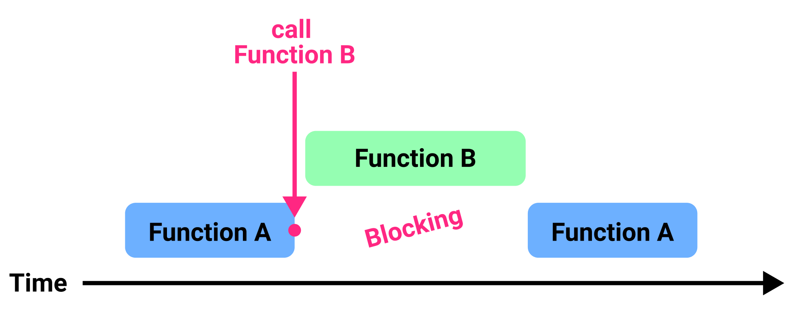
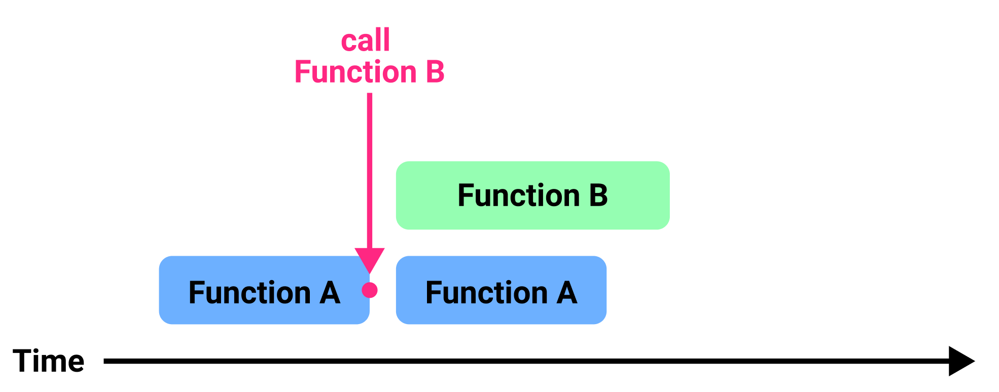
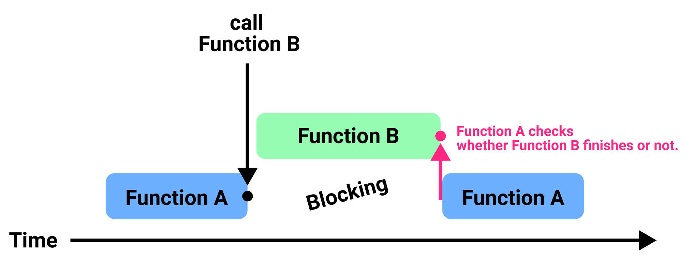
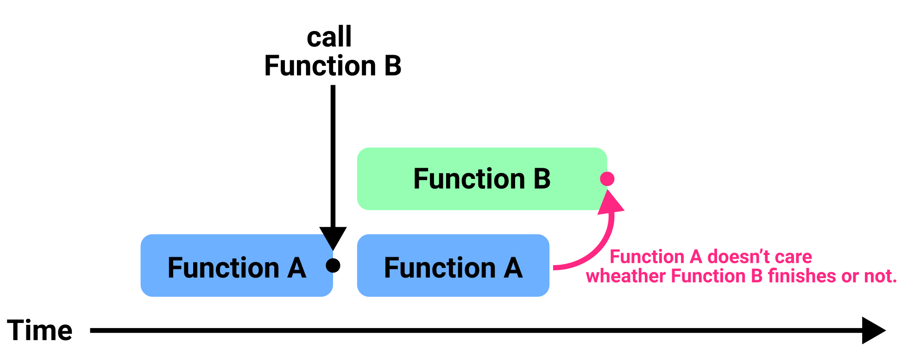

[Android] 비동기, 논블로킹, runOnUiThread()
블로킹과 논블로킹
(1) 블로킹(Blocking)
함수 A에서 함수 B를 호출한다고 가정합시다.
1 | fun A() { |
함수 A는 함수 B가 끝날 때 까지 기다리게 됩니다. 이를 함수 A가 블로킹(Blocking)되었다고 합니다.

즉, 함수 A는 함수 B가 함수가 종료되었다는 의미의 return를 호출하기 전까지 기다리게 됩니다.
(2) 논블로킹(Non-blocking)
함수 A에서 함수 B를 호출한다고 가정합시다.
1 | fun A() { |
함수 A는 함수 B를 호출한 후 기다리지 않고 자신의 실행 흐름을 수행합니다.

이를 함수 A가 논블로킹(Non-Blocking)되었다고 합니다.
동기와 비동기
(1) 동기(Synchronous)
함수 A에서 함수 B를 호출한다고 가정합시다.
1 | fun A() { |
동기식 모델에서 함수 A는 함수 B가 끝날 때 까지 기다리게 됩니다.

이 때문에 함수 A와 함수 B 사이에 연관성있다고 하며, 두 함수가 동기화 되었다고 합니다.
(2) 비동기(Asynchronous)
함수 A에서 함수 B를 호출한다고 가정합시다.
1 | fun A() { |
함수 A는 함수 B가 호출된 후 함수 B가 끝나든 말든 신경쓰지 않고 자신의 일을 수행합니다.

이 때문에 함수 A와 함수 B 사이에 연관성이 없다고 하며, 두 함수가 동기화되지 않았다고 합니다.
관점의 차이
위 예제를 살펴보면 동기는 블로킹과 비슷하고 비동기와 논블로킹이 비슷하다는게 느껴지시나요? 결국 동기/비동기, 블로킹/논블로킹의 차이는 상황을 어떠한 관점에서 바라보는지에 있습니다. 이 때문에 컴퓨터공학에서는 보통 소프트웨어의 실행 흐름을 두 가지로 구분합니다.
- 동기-블로킹 모델
- 비동기-논블로킹 모델
(1) 동기-블로킹 모델
함수 A에서 함수 B를 호출한다고 가정합시다.
1 | fun A() { |
동기-블로킹 모델에서 함수 A는 함수 B가 return을 호출하여 자신을 종료할 때 까지 기다립니다.
(2) 비동기-논블로킹
함수 A에서 함수 B를 호출한다고 가정합시다.
1 | fun A() { |
프로그래밍 언어에 따라 비동기-논블로킹 모델을 구현하는 방법이 다를 수 있습니다. Java나 Kotlin에서 비동기-논블로킹 모델을 사용한다는 것은 멀티 스레드를 사용한다는 의미입니다. Java나 Kotlin에서는 매인 스레드에서 두 개의 실행 흐름을 동시에 수행할 수 없기 때문입니다.
1 | fun A() { |
비동기-논블로킹 모델에서 함수 A는 함수 B가 언제 끝날 지 알 수 없습니다. 두 함수는 동기화되지 않았기 때문입니다. 따라서 보통 함수 A는 함수 B에게 적절한 시점에 특정한 함수나 람다를 호출해달라고 함수 또는 람다식을 전달하게 되며, 이를 콜백라고 합니다.
1 | fun A() { |
runOnUiThread()
안드로이드에서 비동기-논블로킹 작업을 수행한 후, UI를 변경한다고 가정합시다. 안드로이드에서는 매인 스래드에서만 UI를 변경할 수 있습니다. 따라서 비동기-논블로킹 작업 후 매인 스레드에서 UI를 변경하도록 코드를 수정해야합니다.
1 | class MainActivity: AppCompatActivity() { |
AppCompatActivity클래스에 정의된 runOnUiThread()는 인자로 전달된 람다를 매인 스레드에서 실행합니다.
1 | public class AppCompatActivity { |
안드로이드에서의 비동기 처리
안드로이드에서 비동기/논블로킹 모델을 구현하는 방법에는 여러가지가 있습니다. 대표적인 네 가지 방법은 다음과 같습니다.
- 멀티 스레드
- AsycnTask
- ReactiveX (RxJava, RxKotlin)
- Coroutine